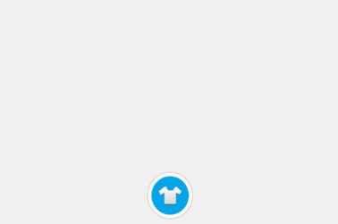
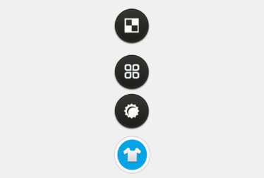

标准银行中的换肤按钮
点击换肤按钮之后
如图所示为标准银行的换肤按钮动画：当点击换肤按钮时，它的三个子按钮开始向上移动，停止后变为第二个图的效果；再次点击换肤按钮，三个子按钮开始下降回到原始的位置并被隐藏。本节将讲述如何实现控件上升和下降的动画效果。
示例的完整代码链接为：up_and_down.xml
标准银行中的换肤按钮动画使用了transition接口中的translateY()函数，该函数实现了控件沿y轴的位移，其用法如下：
transition:translateY(object,y,duration);
其中: object表示操作的控件对象；y表示y轴偏移量，y为正数时表示向下偏移，y为负数时表示向上偏移；duration表示动画持续的时间 (单位: 秒)。
关于transition动画接口的详细说明请参照info_center文档中的动画。
下面我们详细分析标准银行的换肤按钮动画的实现方法：
整个动画过程涉及到了四个按钮，代码中分别为"desktop"、"desktop1"、"desktop2" 和 "desktop3"。"desktop"按钮控制其他三个按钮的展开和收起。初始状态时四个按钮重叠在一起，但除了"desktop"按钮以外其他按钮的display属性都设为了"none"，即处在被隐藏状态。
页面报文的代码片段如下：
<content>
<head>
<style>
.body{width:320px;height:460px;background-color:#F0F0F0;}
.desktop_div{left:140px;bottom:0px;width:45px;height:220px;}
.desktop_button{left:0px;top:166px;width:45px;height:45px;background-image:url(desktop.png);}
.desktop1{left:1px;top:167px;width:42px;height:42px;background-image:url(d1.png);display:none;}
.desktop2{left:1px;top:167px;width:42px;height:42px;background-image:url(d2.png);display:none;}
.desktop3{left:1px;top:167px;width:42px;height:42px;background-image:url(d3.png);display:none;}
</style>
<script type="text/x-lua">
...
</script>
</head>
<body class="body">
<div class="desktop_div" border="0">
<input type="button" class="desktop1" name="desktop1"/>
<input type="button" class="desktop2" name="desktop2"/>
<input type="button" class="desktop3" name="desktop3"/>
<input type="button" class="desktop_button" name="desktop" onclick="click_desktop()"/>
</div>
</body>
</content>
由于我们需要动画过程中按钮不可用，故整个上升和下降的过程中，按钮需要经过以下状态的改变：点击"desktop"按钮后，改变"desktop"按钮为不可点击状态，改变其他三个按钮的display属性，使其显现，并使三个按钮分别向上移动，移到最高点时，改变四个按钮都为可点击状态；再次点击"desktop"按钮，下降动画开始，下降过程中四个按钮都需变为不可点击状态，之后"desktop1"，"desktop2"，"desktop3"沿原上升的线路返回，回到原点后，"desktop"按钮变回可点击状态，其他三个按钮被隐藏。一个动画周期结束。
代码中，up_and_down()函数实现了一个动画周期的过程，click_desktop()函数调用up_and_down()响应 "desktop"按钮的onclick事件。点击"desktop"按钮两次即调用click_desktop()两次，完成一个按钮上升和下降的动画周期。在开始介绍这两个函数之前，我们先了解下它们需要用到的关于改变控件属性和样式的函数。
--[[
@doc:根据名称改变控件属性
@params:
name:控件名称
property:属性，比如："enable"
value:修改值，需要将控件属性修改的值
@attention:如果界面中有多个此名称控件则这些控件都会被修改。
]]--
function changeProperty(name,property,value)
local ctrl = document:getElementsByName(name);
if ctrl and #ctrl > 0 then
for key,ctrl_atom in pairs(ctrl) do
ctrl_atom:setPropertyByName(property,value);
end;
else
window:alert(name .. "控件不存在！");
end;
end;
changePoperty()不同的是第一个参数为table类型，为控件名称的列表。它可以改变一系列名称不同的控件的属性。代码中用来一起改变"desktop1"、"desktop2"、"desktop3" 三个按钮的"enable"属性。 --[[
@doc:改变一系列控件属性
@params:
tab_name:控件名称列表 {"name1","name2"}
property:属性，比如："enable"
value:修改值，需要将控件属性修改的值
]]--
function changeCtrlsProperty(tab_name,property,value)
for key,ctrlName in pairs(tab_name) do
local ctrl = document:getElementsByName(ctrlName);
if ctrl and #ctrl > 0 then
for key,ctrl_atom in pairs(ctrl) do
ctrl_atom:setPropertyByName(property,value);
end;
else
window:alert(name .. "控件不存在！");
end;
end;
end;
changeCtrlsProperty()相似，改变的是控件的style值。代码中用来一起改变 "desktop1"、"desktop2"、"desktop3" 三个按钮的"display"属性。 --[[
@doc:改变一系列控件样式
@params:
tab_name:控件名称列表
style:属性，比如："height"
value:修改值，需要将控件样式修改的值
]]--
function changeCtrlsStyle(tab_name,style,value)
for key,ctrlName in pairs(tab_name) do
local ctrl = document:getElementsByName(ctrlName);
if ctrl and #ctrl > 0 then
for key,ctrl_atom in pairs(ctrl) do
ctrl_atom:setStyleByName(style,value);
end;
else
window:alert(name .. "控件不存在！");
end;
end;
end;
下面介绍up_and_down()函数。代码中引用了变量change_state以标识当前是上升状态还是下降状态，true代表上升状态，false表示下降状态。up_and_down()函数自身包含三个local函数，分别为：
translate_y()函数遍历tab_ctrl_Name列表，为列表中每个控件设置动画停止的监听函数 (change_state为true时监听函数为translate_lis_1()，change_state为false时监听函数为translate_lis())，之后调用transition:translateY()函数使每个控件向上移动，tab_ctrl_Name列表中各个控件的位移按顺序对应tab_distanceY列表中的值。
up_and_down()函数根据change_state的值分两个流程：
translate_y()函数 (此时translate_y()函数第二个参数应为上升位移坐标列表up_list)，最后修改change_state值为false。 translate_y()函数 (此时translate_y()函数第二个参数应为下降位移坐标列表down_list)，最后修改change_state值为true。change_state变量的值初始为true，当"desktop"按钮第一次被点击时，click_desktop()函数便会被触发，此时up_and_down()函数走第一个流程；之后change_state值被修改成了false，故当用户再次点击"desktop"按钮时，虽然click_desktop()还是调用了up_and_down()函数，但进入的是第二个流程，按钮开始向下位移。
up_and_down()和click_desktop()函数的实现代码如下：
--标记按钮上升或下降的状态
local change_state = true;
--[[
@doc: 控件的上升和下降动画
@params:
but_list: 子控件名称列表
down_list: 下降的坐标列表
up_list: 上升的坐标列表
enable_ctrl: 控制按钮名称
]]--
function up_and_down(but_list,down_list,up_list,enable_ctrl)
-- 动画停止监听函数，向上移动动画结束后变更按钮为可用
local function translate_lis_1(object)
object:setPropertyByName("enable","true");
changeProperty(enable_ctrl,"enable","true")
end;
-- 动画停止监听函数，向下移动动画结束后隐藏控件并变更切换按钮能点击
local function translate_lis(object)
object:setStyleByName("display","none");
changeProperty(enable_ctrl,"enable","true")
end;
--[[
@doc: 控件沿Y轴移动
@params:
tab_ctrlName: 子控件名称列表
tab_distanceY: 子控件移动坐标列表
change_state: true/false 判断是上升还是下降状态
]]--
local function translate_y(tab_ctrlName,tab_distanceY,change_state)
for key,value in pairs(tab_ctrlName) do
local condition_button = document:getElementsByName(value);
--设置动画停止监听函数
if change_state then
transition:setStopListener(condition_button[1],translate_lis_1);
else
transition:setStopListener(condition_button[1],translate_lis);
end
--控件移动动画
transition:translateY(condition_button[1],tab_distanceY[key],0.5);
end;
end;
--按钮上升动画
if change_state then
changeProperty(enable_ctrl,"enable","false");
changeCtrlsStyle(but_list,"display","block");
translate_y(but_list,up_list,change_state);
change_state = false;
--按钮下降动画
else
changeProperty(enable_ctrl,"enable","false");
changeCtrlsProperty(but_list,"enable","false");
translate_y(but_list,down_list,change_state);
change_state = true;
end;
end;
--点击换肤按钮
function click_desktop()
--子按钮名称列表
local sub_but_list = {'desktop1','desktop2','desktop3'};
--每个子按钮下降的坐标列表
local down_list = {50,100,150};
--每个子按钮上升的坐标列表
local up_list = {-50,-100,-150};
--换肤按钮名称
local enable_ctrl = "desktop";
--调用up_and_down函数实现动画
up_and_down(sub_but_list,down_list,up_list,enable_ctrl);
end;
按钮起始状态

点击按钮后控件上升
